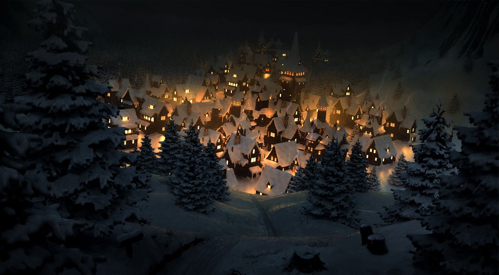

Новый год — один из древнейших праздников, который отмечали ещё в Древнем Риме. Изначально его празднование было связано с сельскохозяйственным циклом и зимним солнцестоянием. В Древнем Риме Новый год отмечали 1 марта, пока Юлий Цезарь не ввёл юлианский календарь в 45 году до н.э., установив начало года на 1 января. Этот день был посвящён Янусу — богу начинаний и дверей, что символизировало переход от прошлого к будущему.
Для меня Новый год — это не просто смена даты в календаре, а настоящее волшебство, которое живёт в сердце каждого человека. Это тот редкий момент, когда время будто останавливается, позволяя оглянуться на пройденный путь и с надеждой заглянуть в будущее. Особенно ценю я предновогоднюю суету — выбор ёлки, украшение дома гирляндами, приготовление особенных блюд, которые пахнут детством и семейным теплом.
В новогоднюю ночь, когда падал ❄️ мы всей 👨👩👧👦 собрались вокруг 🎁 у 🎄 которая ✨ огнями
Когда ⏰ пробили полночь началось 🎉🥳 все кричали "С Новым годом!" 🎊 поднимали 🥂 а за окном взрывались 🎆